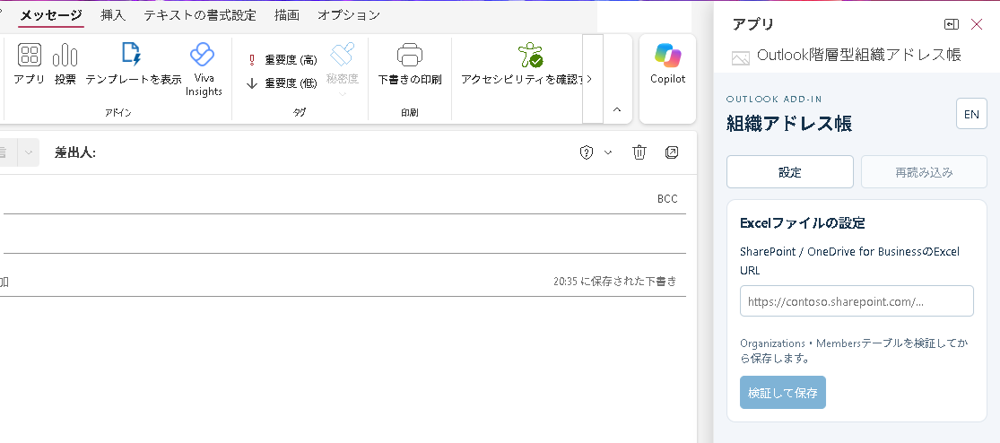
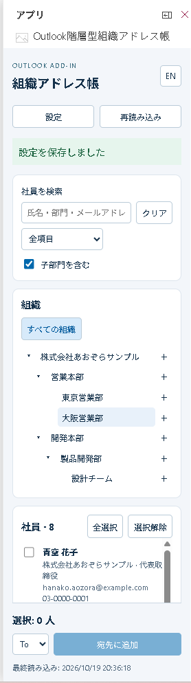

もんじゃOutlook階層型アドレス帳
ファーストサクセス合同会社 2026年10月（初版リリース）
Microsoft 365企業向けの組織アドレス帳アドインです。Web版、PC版両方のOutlookにアプリを追加できるプラグインとして機能します。
重要：管理者の一括配布と、利用者ごとのExcel設定
① 管理者が行うこと：アドインを一括配布
管理者が対象ユーザーへ配布すれば、利用者が各自でカスタムアドインを登録する必要はありません。
- Microsoft 365管理センターを開く（管理者用）
設定場所：［すべて表示］→［設定］→［統合アプリ］→［カスタムアプリをアップロード］。画面によっては［統合アプリ］上部の［アドイン］→［アドインの展開］から登録します。
- 公開用マニフェストをダウンロード
公開用マニフェスト（manifest.xml）をダウンロードし、XMLファイルをアップロードします。開発用のlocalhostを参照するマニフェストは使わないでください。
- 配布対象のユーザー・グループ、または組織全体を指定して展開します。反映に24～72時間かかる場合があります。必要に応じてOutlookを再起動してください。
- 自社の組織・社員情報を入れたExcelをSharePointまたはOneDrive for Businessへ配置し、利用者にファイルへのアクセス権を付与します。［共有 → リンクのコピー］で取得したExcelのURLを利用者へ案内してください。
アドイン配布とMicrosoft Graphの認証同意は別です。組織のポリシーに応じて、管理者がアプリの委任アクセス許可への同意を行ってください。
② 各利用者が行うこと：Excel Onlineのリンクを設定
- 管理者から案内されたExcel Onlineの共有URLを用意します。同じ組織アドレス帳を使う場合は、全員が同じExcelのURLを指定できます。サポートサイトやマニフェストのURLではありません。
- Outlookの新規メール →［アプリ］→ 組織アドレス帳を開き、自社のMicrosoft 365職場アカウントでサインインします。
- アドインの［設定］→［Excelファイルの設定］に、SharePoint / OneDrive for BusinessのExcel共有URLを貼り付け、［検証して保存］を押します。検証が成功すると組織ツリーと社員一覧が表示されます。
リンクを知っているだけではアクセスできません。サインインした利用者本人にExcelファイルのアクセス権が必要です。Organizations・Membersテーブルを含むExcelをご利用ください。
設定は利用者ごとに保存されます。同じメールボックスでは対応するOutlook間で共有されますが、他の利用者へは自動配布されません。変更する場合もアドインの［設定］から行います。
Excelテンプレート
Organizations・Membersの正式なExcelテーブルと架空のサンプルデータを含みます。自社の組織・社員情報に編集して、SharePointまたはOneDrive for Businessへアップロードしてください。テーブル名と列見出しは変更せず、アップロード後に「共有 → リンクのコピー」で取得したURLをアドインに設定します。
導入
- 公開用マニフェストをダウンロード ダウンロードしたXMLファイルを、OutlookのカスタムアドインまたはMicrosoft 365管理センターの統合アプリから登録します。
- 新規メールの「アプリ」から組織アドレス帳を開き、自社の職場アカウントでサインインします。会社のポリシーにより管理者承認が必要です。
- SharePoint / OneDrive for Business上のExcel共有URLを入力します。ExcelにはOrganizations / Membersという正式テーブルが必要です。
Web版Outlookでのアドイン登録
- 下の登録画面を開き、利用するMicrosoft 365の職場アカウントでサインインします。
- 「個人用アドイン（My add-ins）」を選択し、下部の「カスタムアドインの追加 → ファイルから追加」を選びます。
- ダウンロードした公開用マニフェスト（manifest.xml）を選び、登録します。URLを直接登録するのではなく、XMLファイルをダウンロードして指定してください。
- 登録後、新規メールの「アプリ」から起動します。同じメールボックスのNew / Classic Outlookにも反映されます。
登録画面が開かない場合は、Microsoft公式のアドイン管理リンクをお試しください。登録メニューがない場合はMicrosoft 365管理者に配布を依頼してください。
表示を維持する（ピン留め）
- 上の「公開用マニフェスト」を再ダウンロードし、Outlookのアドイン登録を最新版（1.1.0.0）へ更新します。手動登録で反映されない場合は削除・再登録してください。Excelの共有URLを控えてから行ってください。
- メール作成画面からアドインを一度開き、Outlook側のパネル上部にあるピンアイコンを押します。
- 対応するOutlookでは、次のメール作成時もパネル表示を維持できます。最初のピン留めは利用者の操作が必要です。
Outlookの完全終了・再起動後の表示復元はOutlook側に依存します。表示されない場合は作成画面から開き直してください。Excelの参照設定は保存されます。閲覧画面と作成画面のピン留めは別です。
操作画面
画像をクリックすると、別タブで原寸の画像を確認できます。画像は日本語UIの表示例です。
1. Excelファイルの指定
設定画面でSharePoint / OneDrive for BusinessのExcel共有URLを入力し、「検証して保存」を押します。

2. サンプルExcelの読み込み後
読み込みが完了すると、組織ツリーと社員一覧が表示されます。社員を検索・選択し、To／Cc／Bccへ追加できます。

エラー時
- 認証・承認エラー：自社Microsoft 365管理者へ、アプリ名と表示されたエラー文を伝えてください。パスワードやトークンは共有しないでください。
- 403：ファイルへのアクセス権とMicrosoft Graphの委任同意を確認してください。
- テーブルが見つからない：シート名ではなくテーブル名と列名を確認してください。
- 宛先追加：メール作成画面で使用し、新規追加件数を100件以下にしてください。
ソースコードダウンロード
ソースコードはGitHubで公開しています。リポジトリの「Code → Download ZIP」からダウンロードできます。
https://github.com/firstsuccess/outlook-hierarchy
本アドインは社員情報を提供者のデータベースへ保存せず、利用者の権限でMicrosoft Graphから直接取得します。